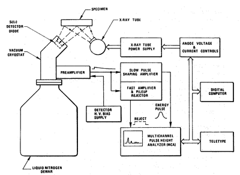

X-ray fluorescence (XRF) spectrometry is an elemental analysis technique with broad application in science and industry. XRF is based on the principle that individual atoms, when excited by an external energy source, emit X-ray photons of a characteristic energy or wavelength. By counting the number of photons of each energy emitted from a sample, the elements present may be identified and quantitated.
Henry Moseley was perhaps the father of this technique, since he, building on W.C. Röentgen’s discovery of the high-energy radiation dubbed X-rays, built an X-ray tube which he used to bombard samples with high-energy electrons. Moseley in 1912 discovered a mathematical relationship between the element’s emitted X-ray frequency and its atomic number. In 1925 Coster and Nishina were the first to use primary X-rays instead of electrons to excite a sample. After Glocker and Schreiber were the first to perform quantitative analysis of materials using XRF in 1928, detector technology had to catch up in order to make the technique practical, which didn’t begin to happen until the 1940’s. The 1950’s saw the first commercially produced X-ray spectrometers. In 1970, the lithium drifted silicon detector was developed, and this technology is still in use today (Jenkins 1988: 51-53).
Modern XRF instruments are capable of analyzing solid, liquid, and thin-film samples for both major and trace (ppm-level) components. The analysis is rapid and usually sample preparation is minimal or not required at all.
The Archaeometry Laboratory at the MU Research Reactor is the home of two Bruker Tracer III-V handheld instruments (one equipped with an automated sample changer) and an Elva-X benchtop instrument. These instruments are used primarily for the provenance research on obsidian artifacts from around the world, but they are also used in special circumstances for the non-destructive analysis of other materials such as metals, ceramic paints, and soils.
The identification of elements by X-ray methods is possible due to the characteristic radiation emitted from the inner electronic shells of the atoms under certain conditions. The emitted quanta of radiation are X-ray photons whose specific energies permit the identification of their source atoms. To understand this phenomenon, we must first look at how X-rays are generated.
When an electron beam of high energy strikes a material, one of the results of the interaction is the emission of photons which have a broad continuum of energies. This radiation, called bremsstrahlung, or “braking radiation”, is the result of the deceleration of the electrons inside the material. The bremsstrahlung continuum is illustrated as a function of electron acceleration voltages for a molybdenum target in Figure 1.
Another result of the interaction between the electron beam and the material is the ejection of photoelectrons from the inner shells of the atoms making up the material. These photoelectrons leave with a kinetic energy (E-φ) which is the difference in energy between that of the incident particle (E) and the binding energy (φ) of the atomic electron. This ejected electron leaves a “hole” in the electronic structure of the atom, and after a brief period, the atomic electrons rearrange, with an electron from a higher energy shell filling the vacancy. By way of this relaxation the atom undergoes fluorescence, or the emission of an X-ray photon whose energy is equal to the difference in energies of the initial and final states. Detecting this photon and measuring its energy allows us to determine the element and specific electronic transition from which it originated (Jenkins 1988: 4-6, Anzelmo 1987 Part 1). Herein lies the basis for XRF spectrometry, where elements may be quantitated based on the rate of emission of their characteristic X-rays from a sample that is being excited.
Any of the electrons in the inner shells of an atom can be ejected, and there are various electrons in the outer shells that can “drop” to fill the void. Thus there are multiple types of allowed transitions that occur which are governed by the laws of quantum mechanics, each transition having its own specific energy or line (Jenkins 1988: 6). The three main types of transitions or spectral series are labeled K, L, or M, corresponding to the shell from which the electron was initially removed. K series lines are of the highest energy, followed by L and then M. Within the series, the specific transitions are denoted by the subscripts α, β, γ, etc. to denote which upper energy shell was involved in the relaxation and finally a numerical subscript to indicate the quantum state within that upper energy shell. For example, the Mo Kα1 transition yields a photon of wavelength 0.071 nm. (Jenkins 1988 p. 4) It is important to note that only the very highest resolution spectrometers could resolve Kα1 and Kα2 lines, so for practical purposes in X-ray spectrometry only the Kα line would be mentioned (Skoog 1998: 275). As shown in Figure 1, once the excitation energy of the incident electron beam exceeds the Mo K transition energies these lines begin to appear in the tube spectrum.
Fluorescence, however, is not the only process by which an excited atom may relax. It competes with the Auger effect, which results in emission of a second photoelectron to regain stability. The relative numbers of excited atoms that fluoresce are described by the fluorescence yield, which increases with increasing atomic number for all three series (Jenkins 1988: 6).
High energy electrons are not the only particles which can cause ejection of photoelectrons and subsequent fluorescent emission of characteristic radiation. High-energy X-ray photons can create the same effect, allowing us to excite a sample with the output of an X-ray tube or any source of photons of the proper energy. In fact, in some applications of XRF spectrometry, X-rays from a tube are used to excite a secondary fluorescer, which emits photons that in turn are used to excite the sample.
When X-rays impinge upon a material, besides being absorbed, causing electron ejection and subsequent characteristic photon emission, they may also be transmitted or scattered. When an X-ray is scattered with no change in energy this is called Rayleigh scattering, and when a random amount of energy is lost the phenomenon is Compton scattering. Scattered X-rays are usually problematic in XRF, creating high levels of background radiation (Anzelmo 1987 Part 1).
Figure 1. Intensity output from a Mo anode X-ray tube at different voltages (after Jenkins 1988: 5).
Since only the inner electron shells are involved in the emission of X-rays, the wavelengths are independent (within our ability to measure) of the state of chemical bonding, which involves the outer-most electron shells only. One exception to this rule involves low-Z elements with fewer electrons. The overall lack of chemical shifts allows the analyst to determine the elemental composition of the sample, whether the elements are present in their pure forms or as compounds (Skoog 1998: 275).
Most of the XRF instruments in use today fall into two categories: energy-dispersive (ED) and wavelength-dispersive (WD) spectrometers. Within these two categories is a tremendous variety of differing configurations, X-ray sources and optics, and detector technologies. This paper will cover the most common types of instruments, with forays into the more advanced or specialized components where they are of interest.
A diagram of a WD system is shown in Figure 2. The instrument operates based on the principle of Bragg diffraction of a collimated X-ray beam, in this case the beam emanating from the sample. A detector is angularly scanned relative to the analyzing crystal, registering the spectrum.
A typical ED spectrometer is diagrammed in Figure 3. Here the entire polychromatic spectrum from the sample is incident upon a detector that is capable of registering the energy of each photon that strikes it. The detector electronics and data system then build the X-ray spectrum as a histogram, with number of counts versus energy.
The “front end” of both types of instruments is the X-ray source. The source consists of an evacuated chamber with a heated cathode, which is usually a tungsten wire, and an anode, which is held at a potential difference of several tens of kilovolts relative to the cathode. Thermal electrons are released from the cathode and accelerated toward the anode. When the electron beam impinges upon the anode, bremsstrahlung radiation as well as X-ray lines characteristic of the anode material are emitted. These photons escape through a beryllium window built into the side of the tube.
There is no one-size-fits-all approach for source selection in XRF. X-ray tube powers may be set up at very different levels, from a fraction of a watt for EDXRF instruments with high detection efficiencies to several kilowatts for WDXRF instruments. In this latter case, the tube must be liquid-cooled since the majority of the power is dissipated as heat. The anode materials must be carefully chosen as well, since the wavelength of their characteristic lines is important for proper excitation of the sample. Some example single-element anode materials are aluminum, chromium, tungsten, palladium, or gold. For detection of light elements, a high intensity of low energy, i.e. 1-10 keV, radiation must be available, while heavy elements require excitation at higher energies up to 50 keV (Jenkins 1995: 43-47, Skoog 1998: 274). It is also important to keep in mind that the primary source of detector background will be the intense primary radiation from the tube, above which the secondary sample radiation must be detected. The use of secondary targets, or filters, can greatly reduce the background and improve sensitivity for specific portions of the spectrum.
For instruments that are designed to acquire the entire spectrum with good sensitivity on light as well as heavy elements, a different approach is taken. A tube anode material is chosen to give a high bremsstrahlung or continuum output, which is used to excite a secondary fluorescer, or target, which gives off its own characteristic lines without the continuum. The sample is then excited by the emission from the target, which is chosen to efficiently excite elements in a certain Z range. A system may be set up to change targets automatically during the analysis so that the low, middle, and high end of the sample spectrum may be sequentially boosted. When an EDXRF instrument uses such a system, tube powers must be increased dramatically since most of the original X-ray intensity is lost.
Certainly XRF excitation is not limited only to X-ray tubes. Less common excitation sources include gamma-emitting radioisotopes (241Am, 109Cd, 153Gd, and others), electron sources where the sample is the tube anode, and synchrotrons, which produce highly intense, coherent, monochromatic X-ray beams (Jenkins 1988: 56, Jenkins 2000).
Up to this point, little has been said regarding what kinds of samples may be analyzed by XRF. The development of portable XRF (PXRF) instruments has greatly expanded the range of samples suitable for analysis. There is no longer a need to fit a sample into a small chamber. In the case of PXRF, it is possible to analyze the samples with the instrument in a stand or the instrument can be moved to the sample, as in the case of analyzing a exposed rock outcrop or a large painting. The majority of the samples analyzed by XRF at MURR are small obsidian artifacts that are placed on the nose of the instrument. We have recently acquired an automated sample changer that allows us to load up to 20 samples at a time and operated much like the sample changers on large lab-based instruments.
The two main types of XRF spectrometers (WD and ED) differ completely in their detection systems. EDXRF systems depend on semiconductor-type detectors which receive the entire emitted spectrum from the sample and decode it into a histogram of number of counts versus photon energy. WDXRF spectrometers, however, use an analyzing crystal to disperse the emitted photons based on their wavelength and place the detector in the correct physical location to receive X-rays of a given energy.
Figure 2: Diagram of a wavelength-dispersive spectrometer. (from Jenkins 1995: 88)
Figure 3: Block diagram of a typical EDXRF spectrometer. (from Jenkins 1995: 123)
Please refer to Figure 2, which displays a block diagram for a WD setup. More collimators, usually made from a series of closely spaced parallel metal plates, are needed to direct the beam in order to closely control the diffraction angle of all detected photons. The analyzing crystal angularly disperses incident radiation of wavelength l according to Bragg’s Law (nλ = 2d sinΘ, n = 1, 2, 3,… where d is equal to the crystal lattice spacing). In the instrument shown, the analyzing crystal may be rotated with the detector assembly simultaneously revolving around it to scan through the possible wavelengths. To resolve wavelengths in all regions, different crystals must be used, since crystals with large spacings must be used for long wavelengths but they make the short wavelengths irresolvable at low q (Jenkins 1995: 89).
The system in the diagram utilizes two detectors in series. The first, a gas-flow proportional detector, is efficient for detecting long-wavelength radiation (> 0.15 nm). Most high-energy X-rays pass through it, however, and are counted by the NaI(Tl) scintillation detector. The gas-flow proportional detector works by placing a high voltage across a volume of gas (usually Ar with methane). An X-ray photon will ionize a number of Ar atoms proportional to its energy. The freed electrons are accelerated in the high voltage, ionizing other Ar atoms and creating an electron cascade which is controlled by the quench gas methane. The freed charges are measured in the circuitry as a voltage pulse whose height is proportional to the energy of the photon that initiated the cascade (Jenkins 1988: 61).
An NaI(Tl) detector contains a large single crystal of sodium iodide that has been doped with thallium. This crystal is sealed from light by a Be window. When an X-ray photon enters the crystal, it places primarily the I atoms in an excited state, in numbers again proportional to its energy. These excited states decay exponentially with time, giving off a flash of light or scintillation when they go. The summed intensity of light strikes a photocathode, which releases photoelectrons that are amplified in a discrete dynode detector. The pulse height measured from this detector is proportional to the energy of the original X-ray photon (Jenkins 1995: 96, Knoll 2000).
One may wonder why these detectors need to have any energy resolution at all, since the X-ray energies are supposed to be dispersed by the Bragg crystal. In order to improve the performance of the spectrometer, it is useful to be able to discard X-rays from higher order (n>1) diffraction, hence the need to resolve out photons of different energies.
With WDXRF systems, it may be possible to have several detector assemblies placed at fixed angular locations in order to analyze for a few selected elements over and over. WDXRF spectrometers often offer more flexibility for the researcher as well as very good sensitivities. The detector outputs are also simpler to use directly and do not generally require heavy use of electronics and computer algorithms in order to deconvolute. Disadvantages include the inability to quickly acquire the entire X-ray spectrum for full-element analyses, higher hardware costs, and a larger instrumental footprint when compared to EDXRF systems.
While simpler in terms of the positioning of the detector versus the sample, EDXRF spectrometers require sophisticated electronics and computer software in order to interpret the detector output. Nowadays this is less complicated, though, due to important technological advances in multichannel analyzers and faster computers, and EDXRF is often the technique of choice for fast multielement analyses.
Dispersion in EDXRF is accomplished through the use of a semiconductor-type detector (Knoll 2000). Although germanium detectors are utilized, the most common type in service is the Si(Li), or lithium-drifted silicon, detector. A semiconductor detector operates based on the principle that an X-ray photon incident upon the diode material will give up its energy to form electron-hole pairs, the number of which is proportional to the energy of the photon. The high voltage applied across the diode quickly collects the released charge on a feedback capacitor, and the resulting proportional voltage pulse amplified by a charge-sensitive preamplifier. The output of the preamp is fed to a main amplifier system. The pileup rejector, part of this system, deals with the probable event that two pulses will arrive very close together in time. From this point, the pulse is converted to a digital signal and processed in the multichannel analyzer (MCA) (Jenkins 1995). In the MCA, dead time, caused by high counting rates, must be corrected. Peaks in the energy spectrum, once acquired, are subject to a large degree of massaging by the software in the connected computer. Sophisticated algorithms sense and quantitatively correct for high backgrounds due to Compton scattering from low atomic number matrices (Metz 1994). Spectrometers that use secondary targets may acquire several energy spectra for each sample, one from each target. Since each target yields better sensitivity in one part of the spectrum, the information from the energy spectra is combined to quantitate each element being analyzed. Accurate quantitative data on the entire mass spectrum may be obtained in a matter of minutes using EDXRF. However, in general the detection limits are higher than those for WDXRF.
For both of the Bruker Tracer instruments we use we have incorporated a secondary target made of thin sheets of copper, aluminum and titanium to optimize the spectra for the analysis of obsidian and any other analyses focusing on elements with with fluorescent energies between about 10 and 20 kV.
We have developed a world-renowned set of obsidian calibration standards that we have used to calibrate our own instruments and Bruker now runs this calibration on all portable XRF instruments heading out to museums and archaeologists. With this calibrations it is possible to acquire quantitative concentrations for many elements that are comparable to data acquired by mosre costly and destructive neutron activation analysis (NAA)
The primary source of X-rays for the Tracer-III is an X-ray tube with a Rh exit window. The tube voltage can be varied up to 45 kV, although we generally analyze the obsidian with a setting of 40kV. The secondary target, or filter, primarily used includes a 6 mil thick sheet of copper (used to block X-rays below about 20kV) a 2 mil sheet of titanium (added to remove the secondary copper X-rays) and a 12 mil sheet of aluminum (to absorb the titanium X-rays).
The newly developed sample changer (designed by Dewitt Systems) has a carousel that holds 20 samples . This sample changer has greatly increased our analytical efficiency, allowing us to analyze up to 800 samples per week. An example sample spectrum is presented in Figure 4.
Sample preparation is highly variable depending on the matrix and goals of the analysis. Most of the materials we analyze (obsidian, metals, and ceramic paints) do not require any sample preparation. The choice of sample preparation depends on the nature of the X-ray beam relative to the sample. For example, a piece of obsidian that is 1 cm thick and has a clean, flat surface will provide ideal results. As sample sget smaller, thinner, or less homogenous it is necessary to understand the nature of the X-ray beam and how it interacts with the sample.
The Bruker Tracer III instruments have a beam size of only about 2 x 3 mm. This small beam is fine for homogenous materials, but heterogenous material such as crystalline rocks and tempered pottery may need to be analyzed multiple times in numerous areas to generate a representative average composition. The small beam size is ideal for isolating specific painted elements on the surface of ceramics and also aids in the analysis of very small obsidian artifacts.
Perhaps even more important than the area of the beam is the depth of analysis. As a general rule, the higher up the energy spectrum, the greater the depth of X-ray penetration in the sample. For example, the analysis of iron (6.4 kV) in obsidian is primarily a surface analysis while zirconium (15.78 kV) is measured from up to almost a centimeter deep. In thick homogenous samples this depth of analysis makes little difference, but if samples are thinner, it effects to resulting spectrum in different ways depending on the specific sample thickness and particular element of interest. Ferguson (in press) addresses a number of approaches to quantitative analysis of thin samples.
Figure 4: Example spectral output from the Bruker Tracer III-SD at MURR.
The ability to analyze samples without destructive sample preparation procedures has been a great advancement for archaeologists. We can now analyze large and valuable artifact assemblages that would have been off-limits to destructive proceedures. However, for non-archaeological applications of XRFthe most common method of sample prep is pelletizing, which can be made to work for most matrices that can be ground into an homogeneous powder, including soil, minerals, and dried organic matrices such as tissues or leaves. Difficult grinding is accomplished with a hard agate mortar and pestle but many samples can be adequately homogenized by placing into a hard plastic vial, adding a plastic mixing ball, and violently shaking in a mixer mill. A powdery binder containing cellulose, starch, polyvinyl alcohol or other organics is usually weighed in and blended thoroughly with the sample, and the resulting mixture added to a deformable aluminum cup. (Buhrke p. 39) The sample and cup are pressed in a cylindrical die to form a supported pellet which ideally has a smooth, homogeneous sample surface and good physical stability.
Here particle size and homogeneity play a big factor. The thin surface layer must be representative of the bulk sample, and studies have shown that large errors (up to 50%) in quantitation can occur for some elements when particle sizes exceed 50 µm. This is due to the variance in X-ray penetration depths with energy (Jenkins 1995: 281). Particles may be inhomogeneous also, having a different surface composition than their bulk. For example, copper sulfides may become partially oxidized at the surface, causing the relative absorption for Cu K lines to differ from that of the L lines. The L line photons will not penetrate as deeply and will tend to be emitted more from the oxide layer. By monitoring the ratio of the Cu Kα line to the Cu Lα, the analyst can use this phenomenon to an advantage, allowing him or her to deduce some of the chemistry of the sample (Jenkins 2000).
One way to get around sample grinding is to fuse the sample at high temperatures with sodium or lithium tetraborate and then to pour this glass-like mixture into a mold (Buhrke: 41). Chemical reactions occur within the melt which dissolve particles and create a homogeneous liquid that hardens upon cooling. The disadvantages to this technique include the additional time to prepare the melt and the possibility of the sample reacting with even inert crucible materials such as platinum.
Homogeneous solid samples such as metals may be machined and smoothed to form disks. Whatever type of preparation is done, the surface roughness of the sample should be taken into account. A rough surface causes the penetration layer to look heterogeneous to the spectrometer. In general, the surface roughness (measured in µm) should not exceed the path length for 10% absorption of the radiation being measured (Jenkins 1995: 278).
Currently XRF spectrometry is very widely applied in many industries and scientific fields. The steel and cement industries routinely utilize XRF devices for material development tasks and quality control. (Anzelmo 1987 Part 1) NIST utilizes XRF as one technique to quantitatively analyze and acceptance-test many of its standard reference materials (SRMs), from spectrometric solutions to diesel fuel to coal to metal alloys (Sieber 2000). The plastics industry is looking at a modified XRF spectrometer as an on-line wear monitor, taking advantage of its ability to detect particles of worn-off metal in extruded plastic pieces (Metz 1994). Polish scientists are accomplishing XRF analyses on very thin films by placing the source and detector at very low angles with respect to the sample. This technique is being applied to trace element determinations in water samples that have been evaporated to a thin film of residue (Holynska 1998).
XRF has been one of the tools of choice for geologists for many years, so much so that graduating geologists usually receive practical training with these devices, whereas graduating chemists probably haven't even heard of the technique. For geologists, the ability to determine major and trace components in one quick analysis with relatively little sample preparation has been a boon (Anzelmo 1987 Part 1, Part 2). Current basic research aimed at improving XRF analyses for geological and ecological samples focuses on methods for correcting for matrix effects, in which major components absorb some of the X-rays emitted from trace components (Revenko 2002).
Archaeometrists have applied XRF in order to solve their ancient mysteries. An example of this was the study of the composition of blue soda glass from York Minster, England, which distinguished three compositional groups, indicating this number of possible sources for the glass. Trace metal signatures also can effectively differentiate genuine artifacts from modern copies (Jenkins 2000).
Forensic scientists utilize XRF spectrometry to match samples associated with suspects (i.e. dirt or sand on clothing or shoes) to samples from crime scenes. As for other applications, here XRF can help elucidate an elemental fingerprint, without need to analyze the evidence destructively (Jenkins 2000).
XRF is a versatile, rapid technique which lends itself to a wide variety of samples from powders to liquids. It is convenient and economical to use, with the major input cost being the hardware itself, which averages around $75,000 for a modern industrial-use spectrometer or $125,000 for a research-quality instrument. The instruments have few moving parts, tend to be low-maintenance, and on a regular basis consume only liquid nitrogen and electricity. Disadvantages include fairly high limits of detection (LODs) when compared to other methods, as well as the possibility of matrix effects, although these can usually be accounted for using software-based correction procedures. LODs for graphite furnace atomic absorption spectroscopy (GFAAS) beat XRF by several orders of magnitude, but analyses can exhibit substantial matrix effects. GFAAS is also relatively slow, with one element determined at a time, and is destructive (Jenkins 1988: 161). PXRF instruments are capable of producing results comparable in many ways to the lab-based XRF at a fraction of the cost. PXRF instruments can be purchased for about $30,000 to $50,000 complete with vacuum systems, sample changer, and accompanying computer.
ICP-MS is a versatile technique that can achieve LODs many orders of magnitude lower than XRF. In general, ICP-MS is easily capable of determining many elements as quickly or more so than XRF with very good accuracy. However, usually samples must be in liquid form, which often requires acid digestion and laborious sample prep. One can sample solids with laser ablation ICP-MS but this is better suited to tiny spot sizes on the surface. ICP techniques also require copious amounts of expensive high-purity argon gas.
Neutron activation analysis (NAA) uses thermal neutrons to activate isotopes of trace elements in samples. It has ppb-level LODs and is capable of fast, multi-element determinations. Certainly, though, it is not as innocuous and convenient a technique as XRF, and requires expert supervision as well as a nuclear reactor. It is dangerous and possibly illegal to irradiate samples whose major components are unknown.
Hopefully it is clear from this discussion what niche XRF occupies in the field of elemental analysis. No technique is the answer to every analytical problem, and the analyst must be judicious in his or her selection of methodology.
XRF certainly does hold an important position in the realm of analytical chemistry. Will it flourish in popularity in the future, or will it slowly fade into obsolescence? To help provide an answer, two new XRF-related technologies will be discussed. These advances are changing the face of XRF spectrometry.
Materials at cryogenic temperatures exhibit a very low heat capacity. Theoretically, the heat deposited by one absorbed X-ray photon could change the temperature of a small volume of material enough to be measured. This approach to photon detection differs fundamentally from that of semiconductor-type devices and has been made practical by the use of materials that become superconductive below a specific transition temperature. Very slight ohmic heating is used to balance these materials on the razor-edge of this transition, creating a very sensitive thermometer. When a photon deposits its energy into a strip of this material, the temperature and resistivity of the strip goes up, reducing the current flow and the ohmic heating rate. The temperature then drops back to the transition-edge. The blip in the current flow is recorded by detector electronics, which relate current drop to photon energy (Knoll 2000).
The advantage this very interesting new microcalorimeter brings to X-ray detection is increased energy resolution. Recall that the X-Lab 2000's Si(Li) detector has an energy resolution of 150 eV at 5.9 keV. NIST scientists, who developed the first TES, claim to have achieved an energy resolution of 3 eV. This increased performance allows closely spaced spectral peaks to be resolved, increasing the sensitivity and accuracy of some complicated analyses. Moreover, with this new detector, XRF can now yield information on the chemical bonding state of elements by detecting minute X-ray energy shifts on the order of a few eV (Sieber 2000).
Continued research into the fundamentals of XRF, stimulated partially by the new advances mentioned above, means that the technique is alive and well. Analytical chemists would be well-advised to keep their eyes on the development of XRF and can look forward to better, faster elemental analyses because of it.
Anzelmo, John A. and Lindsay, James R. Journal of Chemical Education, August 1987, 64(8). A181-A185.
Anzelmo, John A. and Lindsay, James R. Journal of Chemical Education, September 1987, 64(9). A200-A204.
Buhrke, Victor E.; Jenkins, Ron; Smith, Deane K. A Practical Guide for the Preparation of Specimens for X-Ray Fluorescence and X-Ray Diffraction Analysis. 1998, John Wiley & Sons, Inc. QD96.X2P73 ISBN 0-471-19458-1
Ferrero, J. L. et al. X-Ray Spectrometry, 2002, 31, 441-447.
Holynska, Barbara et al. Fresenius Journal of Analytical Chemistry, 1998, 362, 294-298.
Jenkins, Ron, X-Ray Fluorescence Spectrometry. 1988, John Wiley & Sons, Inc. QD96.X2J47 ISBN 0-471-83675-3.
Jenkins, Ron; Gould, R. W.; Gedcke, Dale. Quantitative X-Ray Spectrometry. Second Edition, 1995, Marcel Dekker, Inc. QD96.X2 J46 ISBN 0-8247-9554-7.
Jenkins, Ron; Gould, R. W.; Gedcke, Dale. Applied Spectroscopy Reviews, 2000, 35(1,2), 129-150.
Klockenkämper, Reinhold. Total Reflection X-Ray Fluorescence Analysis. 1997, John Wiley & Sons, Inc. QD96.X2K58 ISBN 0-471-30524-3
Knoll, G. F. Journal of Radioanalytical and Nuclear Chemistry, 2000, 243(1), 125-131.
Metz, Uwe; Hoffman, Peter; Weinbruch, Stephan; Ortner, Hugo N. Mikrochimica Acta, 1994, 117, 95-108.
Potts, Philip J. et al. Journal of Analytical Atomic Spectrometry, 2001, 16, 1217-1237.
Revenko, Anatoly G. X-Ray Spectrometry, 2002, 31, 264-273.
Sieber, J. R. X-Ray Spectrometry, 2000, 29, 327-338.
Skoog, Douglas A.; Holler, F. James; Nieman, Timothy A. Principles of Instrumental Analysis. Fifth Edition, 1998, Thomson Learning, Inc. ISBN 0-03-002078-6.
Spectro X-Lab Pro Manual, circa 2000. Spectro Analytical Instruments, Inc.